32.3 Transforming Functions into Accumulator Style
Articulating the accumulator statement is difficult, but, without formulating a good invariant, it is impossible to understand an accumulator-style function. Since the goal of a programmer is to make sure that others who follow understand the code easily, practicing this skill is critical. And formulating invariants deserves a lot of practice.
The goal of this section is to study the formulation of accumulator statements with three case studies: a summation function, the factorial function, and a tree-traversal function. Each such case is about the conversion of a structurally recursive function into accumulator style. None actually calls for the use of an accumulator parameter. But they are easily understood and, with the elimination of all other distractions, using such examples allows us to focus on the articulation of the accumulator invariant.
For the first example, consider these definitions of the sum function:
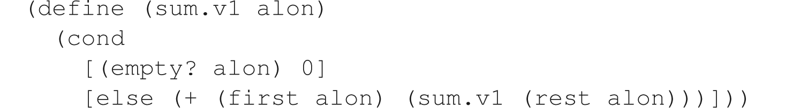
Here is the first step toward an accumulator version:
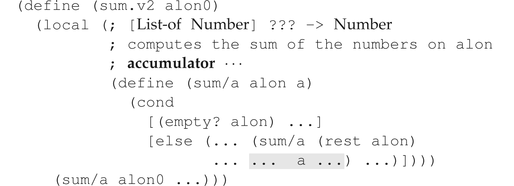
Stop! Supply a signature and a test case that works for both.
As suggested by our first step, we have put the template for sum/a into a local definition, added an accumulator parameter, and renamed the parameter of sum.
Figure 183 shows two side-by-side sketches of hand-evaluations. A comparison immediately suggests the central idea, namely, that sum/a can use the accumulator to add up the numbers it encounters. Concerning the accumulator invariant, the calculations suggest a represents the sum of the numbers encountered so far:
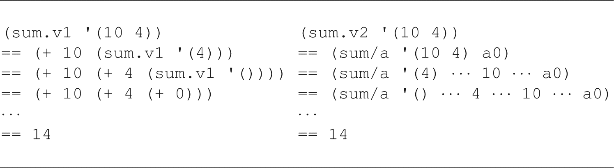
Figure 183: Calculating with accumulator-style templates
a is the sum of the numbers that alon lacks from alon0
For example, the invariant forces the following relationships to hold:
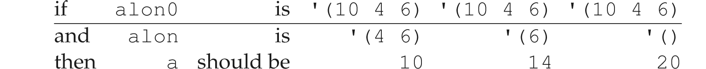
Given this precise invariant, the rest of the design is straightforward:
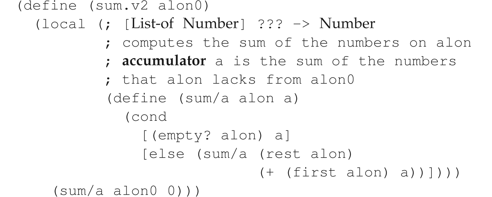
If alon is '(), sum/a returns a because it represents the sum of all numbers on alon. The invariant also implies that 0 is the initial value for a0 and + updates the accumulator by adding the number that is about to be “forgotten”—(first alox)—to the accumulator a.
Exercise 495. Complete the manual evaluation of (sum/a '(10 4) 0) in figure 182. Doing so shows that the sum and sum.v2 add up the given numbers in reverse order. While sum adds up the numbers from right to left, the accumulator-style version adds them up from left to right.
Note on Numbers Remember that for exact numbers, this difference has no effect on the final result. For inexact numbers, the difference can be significant. See the exercises at the end of intermezzo 5. 
For the second example, we turn to the well-known factorial function:
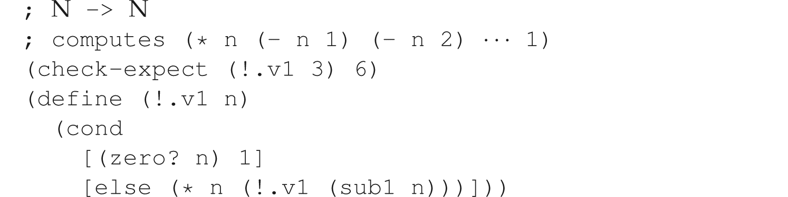
The factorial function is useful for the analysis of algorithms.
While relative-2-absolute and invert processed lists, the factorial function works on natural numbers, which its template reflects.
We proceed as before with a template for an accumulator-style version:
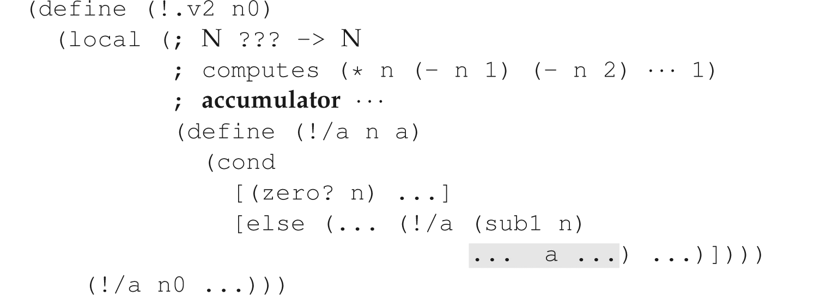
followed by a sketch of a hand-evaluation:
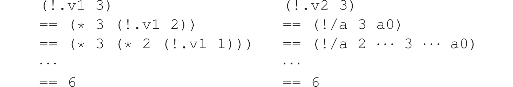
The left column indicates how the original version works; the right one sketches how the accumulator-style function proceeds. Both structurally traverse a natural number until they reach 0. While the original version schedules only multiplications, the accumulator keeps track of each number as the structural traversal descends through the given natural number.
Given the goal of multiplying these numbers, !/a can use the accumulator to multiply the numbers immediately:
a is the product of the natural numbers in the interval [n0,n).
In particular, when n0 is 3 and n is 1, a is 6.
Exercise 496. What should the value of a be when n0 is 3 and n is 1? How about when n0 is 10 and n is 8?
Using this invariant we can easily pick the initial value for a—it is 1—and we know that multiplying the current accumulator with n is the proper update operation:
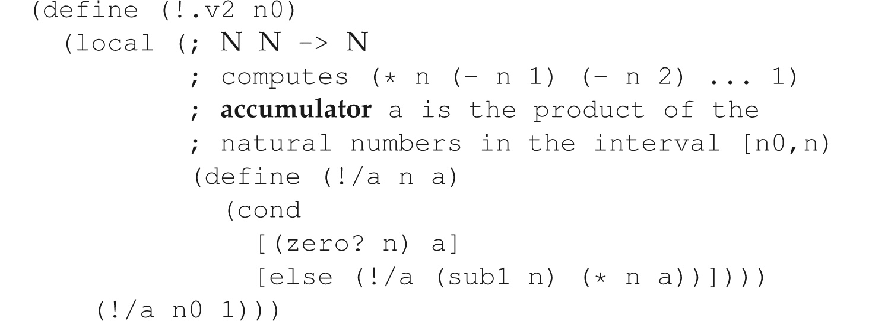
It also follows from the accumulator statement that when n is 0, the accumulator is the product of n through 1, meaning it is the desired result. So, like sum, !/a returns a in this case and uses the result of the recursion in the second case.
Exercise 497. Like sum, !.v1 performs the primitive computations, multiplication in this case, in reverse order. Surprisingly, this affects the performance of the function in a negative manner.
Measure how long it takes to evaluate (!.v1 20) 1,000 times. Recall that (time an-expression) function determines how long it takes to run an-expression.
For the third and last example, we use a function that measures the height of simplified binary trees. The example illustrates that accumulator-style programming applies to all kinds of data, not just those defined with single self-references. Indeed, it is as commonly used for complicated data definitions as it is for lists and natural numbers.
Here are the relevant definitions:
(define-struct node [left right])
; A Tree is one of:
; -- '()
; -- (make-node Tree Tree)
(define example
(make-node (make-node '() (make-node '() '())) '()))
These trees carry no information; their leafs are '(). Still, there are many different trees, as figure 184 shows; it also uses suggestive graphics to bring across what these pieces of data look like as trees.
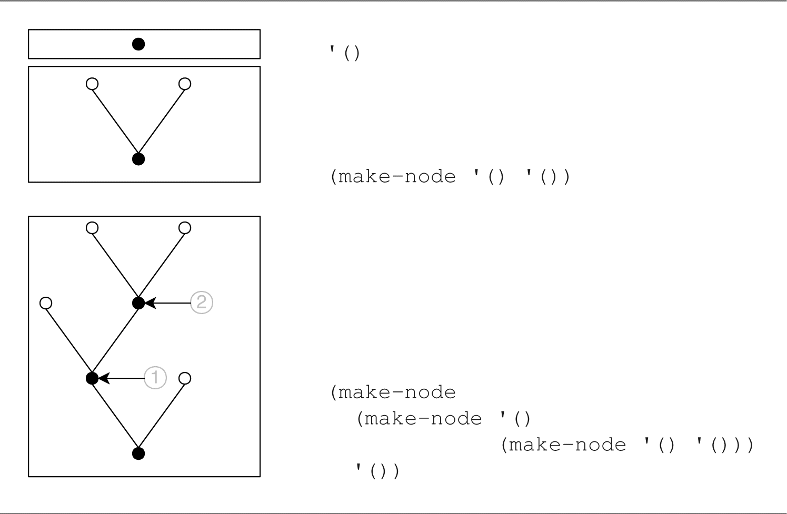
Figure 184: Some stripped-down binary trees
One property that one may wish to compute is the height of such a tree:
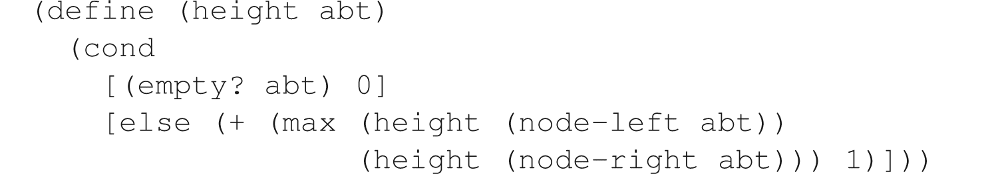
Stop! Supply a signature and a test. The table in figure 184 indicates how to measure the height of a tree, though it leaves the notion somewhat ambiguous: it is either the number of nodes from the root of the tree to the highest leaf or the number of connections on such a path. The height function follows the second option.
To transform this function into an accumulator-style function, we follow the standard path. We begin with an appropriate template:
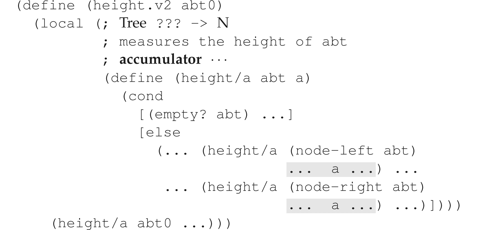
As always, the problem is to determine what knowledge the accumulator represents. One obvious choice is the number of traversed branches:
a is the number of steps it takes to reach abt from abt0.
Illustrating this accumulator invariant is best done with a graphical example. Take a second look at figure 184. The bottom-most tree comes with two annotations, each pointing out one subtree:
1. If abt0 is the complete tree and abt is the subtree pointed to by the circled 1, the accumulator’s value must be 1 because it takes exactly one step to get from the root of abt to the root of abt0.
2. In the same spirit, for the subtree labeled 2 the accumulator is 2 because it takes two steps to get to this place.
As for the preceding two examples, the invariant basically dictates how to follow the rest of the design recipe for accumulators: the initial value for a is 0; the update operation is add1; and the base case uses the accumulated knowledge by returning it. Translating this into code yields the following skeleton definition:
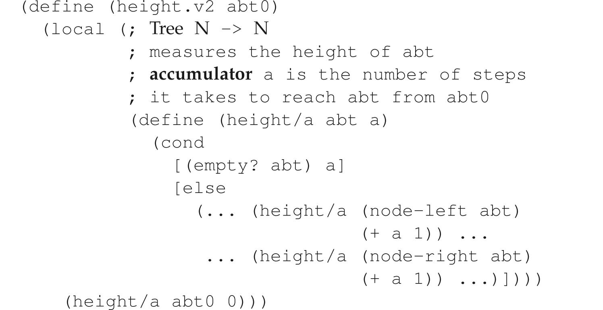
But, in contrast to the first two examples, a is not the final result. In the second cond clause, the two recursive calls yield two values. The design recipe for structural functions dictates that we combine those in order to formulate an answer for this case; the dots above indicate that we still need to pick an operation that combines these values.
Following the design recipe also tells us that we need to interpret the two values to find the appropriate function. According to the purpose statement for height/a, the first value is the height of the left subtree, and the second one is the height of the right one. Given that we are interested in the height of abt itself and that the height is the largest number of steps it takes to reach a leaf, we use the max function to pick the proper one; see figure 185 for the complete definition.
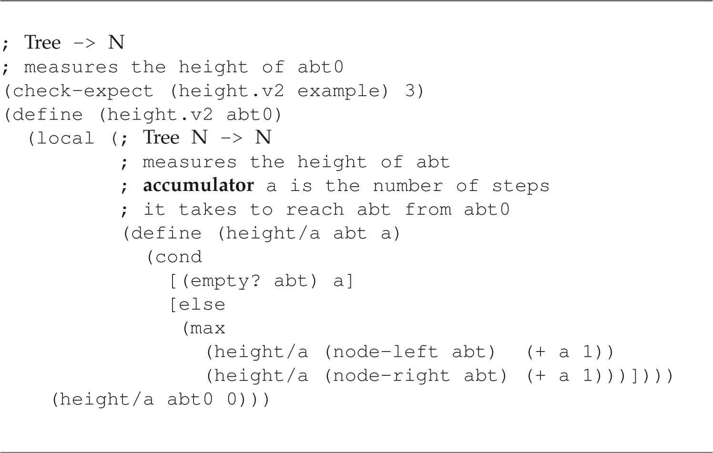
Figure 185: The accumulator-style version of height
Note on an Alternative Design In addition to counting the number of steps it takes to reach a node, an accumulator function could hold on to the largest height encountered so far. Here is the accumulator statement for the design idea:
The first accumulator represents the number of steps it takes to reach abt from (the root of) abt0. The second one stands for the height of the part in abt0 that is strictly to to the left of abt.
Clearly, this statement assumes a template with two accumulator parameters, something we have not encountered before:
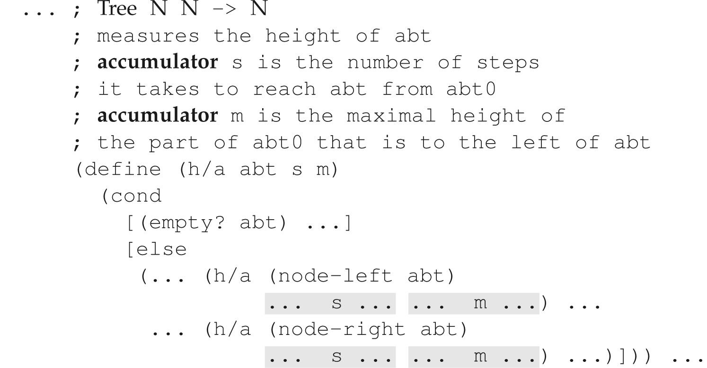
Exercise 498. Complete height.v3. Hint The bottom-most tree of figure 184 contains no subtree to the left of the subtree marked with 1. It contains one complete path from root to tree in the part of the tree that is to the left of the subtree marked with 2; this path consists of two steps.
This second design has a more complex accumulator invariant than the first one. By implication, its implementation requires more care than the first one. At the same time, it comes without any obvious advantages.
Our point is that different accumulator invariants yield different variants. You can design both variants systematically, following the same design recipe. When you have complete function definitions, you can compare and contrast the results, and you can then decide which one to keep, based on evidence. End
Exercise 499. Design an accumulator-style version of product, the function that computes the product of a list of numbers. Stop when you have formulated the accumulator invariant and have someone check it.
The performance of product is O(n) where n is the length of the list. Does the accumulator version improve on this?
Exercise 500. Design an accumulator-style version of how-many, which is the function that determines the number of items on a list. Stop when you have formulated the invariant and have someone check it.
The performance of how-many is O(n) where n is the length of the list. Does the accumulator version improve on this?
Computer scientists refer to this space as stack space, but you can safely ignore this terminology for now.
When you evaluate (how-many some-non-empty-list) by hand, n applications of add1 are pending by the time the function reaches '()—where n is the number of items on the list. Computer scientists sometime say that how-many needs O(n) space to represent these pending function applications. Does the accumulator reduce the amount of space needed to compute the result?
Exercise 501. Design an accumulator-style version of add-to-pi. The function adds a natural number to pi without using +:
; N -> Number
; adds n to pi without using +
(check-within (add-to-pi 2) (+ 2 pi) 0.001)
(define (add-to-pi n)
(cond
[(zero? n) pi]
[else (add1 (add-to-pi (sub1 n)))]))
Stop when you have formulated the accumulator invariant and have someone check it.
Exercise 502. Design the function palindrome, which accepts a non-empty list and constructs a palindrome by mirroring the list around the last item. When given (explode "abc"), it yields (explode "abcba").
Hint Here is a solution designed by function composition:
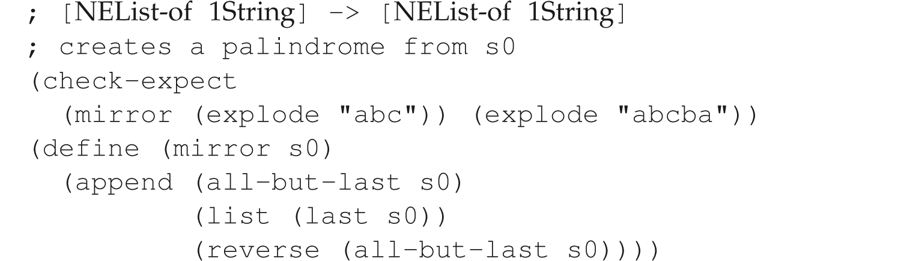
See chapter 11.4 for last; design all-but-last in an analogous manner.
This solution traverses s0 four times:
1. via all-but-last,
2. via last,
3. via all-but-last again, and
4. via reverse, which is ISL+’s version of invert.
Even with local definition for the result of all-but-last, the function needs three traversals. While these traversals aren’t “stacked” and therefore don’t have a disastrous impact on the function’s performance, an accumulator version can compute the same result with a single traversal.
Exercise 503. Exercise 467 implicitly asks for the design of a function that rotates a Matrix until the first coefficient of the first row differs from 0. In the context of Exercise 467, the solution calls for a generative-recursive function that creates a new matrix by shifting the first row to the end when it encounters a 0 in the first position. Here is the solution:
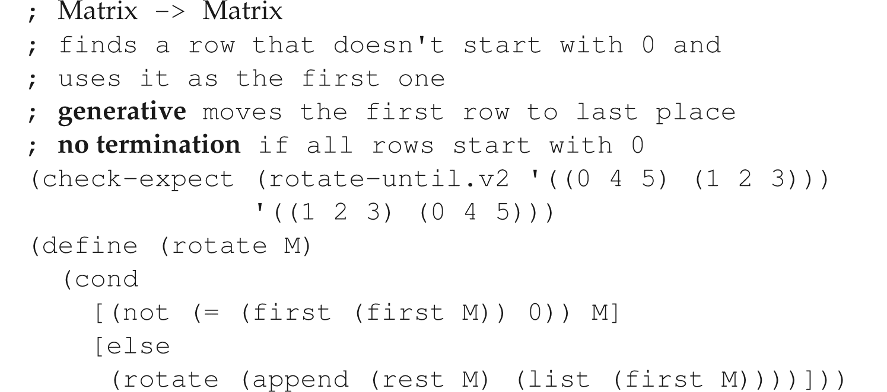
Stop! Modify this function so that it signals an error when all rows start with 0.
If you measure this function on large instances of Matrix, you get a surprising result:
As the number of rows increases from 1,000 to 5,000, the time spent by rotate does not increase by a factor of five but by twenty.
The problem is that rotate uses append, which makes a brand-new list like (rest M) only to add (first M) at the end. If M consists of 1,000 rows and the last row is the only one with a non-0 coefficient, that’s roughly
lists. How many lists do we get if M consists of 5,000 lines?
Now suppose we conjecture that the accumulator-style version is faster than the generative one. Here is the accumulator template for a structurally recursive version of rotate:
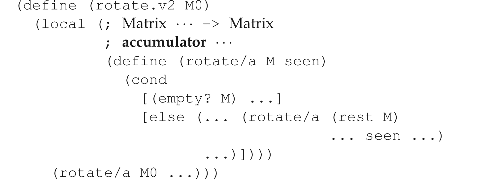
The goal is to remember the first row when its leading coefficient is 0 without using append for every recursion.
Formulate an accumulator statement. Then follow the accumulator design recipe to complete the above function. Measure how fast it runs on a Matrix that consists of rows with leading 0s except for the last one. If you completed the design correctly, the function is quite fast.
Exercise 504. Design to10. It consumes a list of digits and produces the corresponding number. The first item on the list is the most significant digit. Hence, when applied to '(1 0 2), it produces 102.
Domain Knowledge You may recall from grade school that the result is determined by 1 · 102 + 0 · 101 + 2 · 100 = ((1 · 10 + 0) · 10) + 2 = 102.
Exercise 505. Design the function is-prime, which consumes a natural number and returns #true if it is prime and #false otherwise.
Domain Knowledge A number n is prime if it is not divisible by any number between n - 1 and 2.
Hint The design recipe for N [ >=1] suggests the following template:
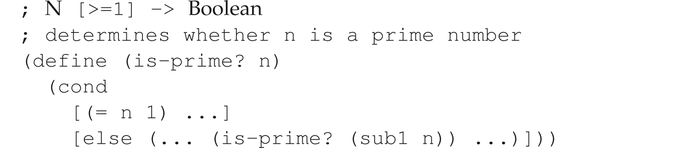
This template immediately tells you that the function forgets n, its initial argument as it recurs. Since n is definitely needed to determine whether n is divisible by (- n 1), (- n 2), and so on, you know that you need an accumulator-style function.
Note on Speed Programmers who encounter accumulator-style functions for the first time often get the impression that they are always faster than their plain counterparts. So let’s take a look at the solution of exercise 497:
An explanation of these times is beyond the scope of this book.
The table’s top row shows the number of seconds for five runs of (!.v1 20), while the bottom one lists those of running (!.v2 20). The last column shows the averages. In short, the table shows that people jump to premature conclusions; the performance of at least one accumulator-style function is worse than that of the original. Do not trust prejudices. Instead, measure performance characteristics of your programs for yourself. End
Exercise 506. Design an accumulator-style version of map.
Exercise 507. Exercise 257 explains how to design foldl with the design recipes and guidelines of the first two parts of the book:
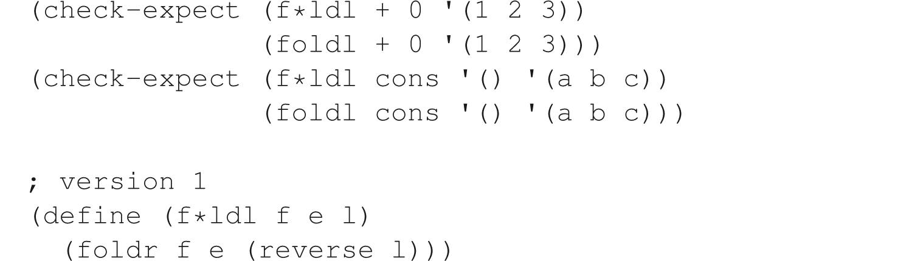
That is, foldl is the result of reversing the given list and then using foldr to fold the given function over this intermediate list.
The f*ldl function obviously traverses the list twice, but once we design all the functions, it becomes clear how much harder it has to work:
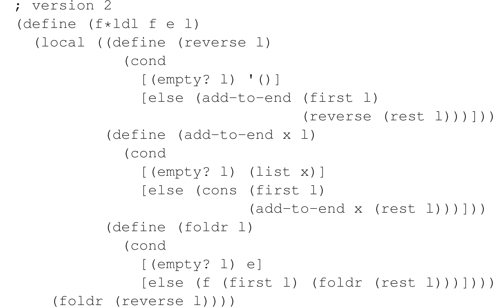
We know that reverse has to traverse a list once for every item on the list, meaning f*ldl really performs n2 traversals for a list of length n. Fortunately, we know how to eliminate this bottleneck with an accumulator:
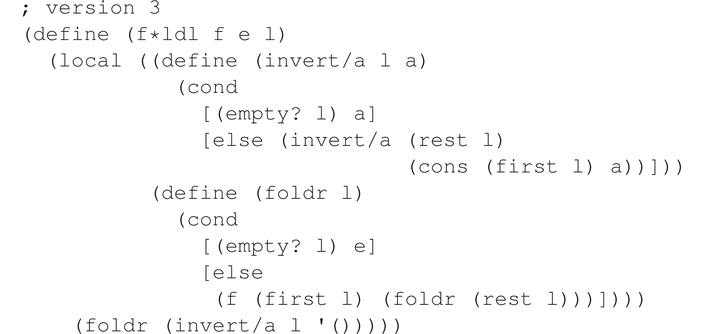
Once reverse uses an accumulator, we actually get the apparent performance of two traversals of the list. The question is whether we can improve on this by adding an accumulator to the locally defined fold:
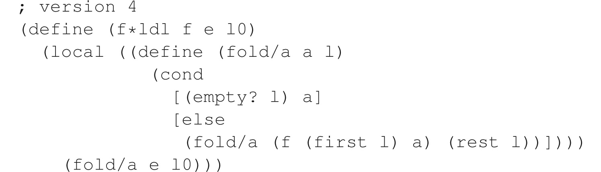
Since equipping the function with an accumulator reverses the order in which the list is traversed, the initial reversal of the list is superfluous.
Task 1 Recall the signature for foldl:
; [X Y] [X Y -> Y] Y [List-of X] -> Y
It is also the signature of f*ldl. Formulate the signature for fold/a and its accumulator invariant. Hint Assume that the difference between l0 and l is (list x1 x2 x3). What is a, then?
You may also be wondering why fold/a consumes its arguments in this unusual order, first the accumulator and then the list. To understand the reason for this ordering, imagine instead that fold/a also consumes f—as the first argument. At this point it becomes abundantly clear that fold/a is foldl:
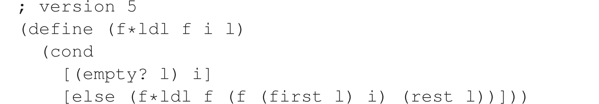
Task 2 Design build-l*st using an accumulator-style approach. The function must satisfy the following tests:
(check-expect (build-l*st n f) (build-list n f))
for any natural number n and function f.